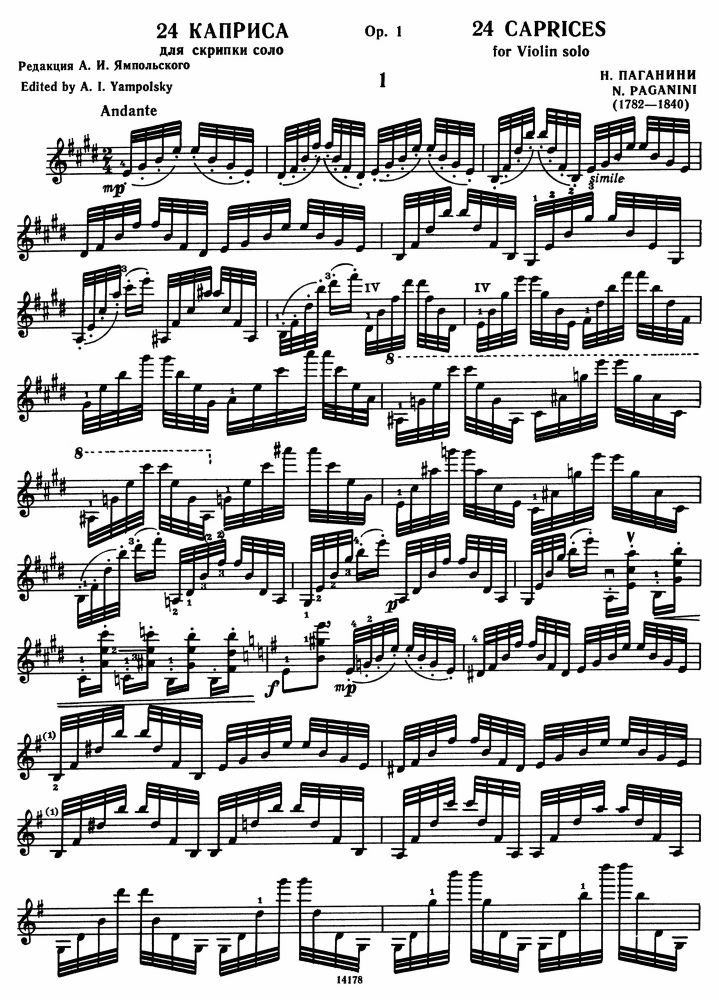

Великий скрипач

Итальянский скрипач и композитор
Никколо Паганини — один из величайших скрипачей в истории. Его невероятная техника, выразительное исполнение и загадочный образ сделали его легендой европейской музыкальной культуры.
Он расширил представление о возможностях скрипки, показав, что инструмент способен передавать виртуозный блеск, драматизм и необыкновенную музыкальную энергию.
01. Детство и ранние годы
Никколо Паганини родился 27 октября 1782 года в Генуе, Италия. Он вырос в семье Антонио Паганини и Терезы Боччардо. Его отец занимался торговлей и увлекался музыкой.
Антонио заметил музыкальные способности сына и начал обучать его игре на музыкальных инструментах. Сначала Никколо занимался мандолиной, а затем сосредоточился на скрипке.
Мальчик обладал необыкновенным музыкальным слухом, хорошей памятью и способностью быстро осваивать сложные произведения. Позже он обучался у местных музыкантов, в том числе у скрипача Джакомо Косты.
02. Начало карьеры и слава
В подростковом возрасте Паганини начал выступать перед публикой в разных городах Италии. В 1797 году он отправился в концертную поездку по Северной Италии вместе с отцом.
В 1805 году Паганини поступил на службу к Элизе Бачокки, сестре Наполеона Бонапарта, правившей в Лукке. В 1809 году он оставил придворную службу и начал самостоятельную концертную карьеру.
В 1828 году музыкант отправился в Вену, затем выступал в городах Германии, Париже и Лондоне. Его виртуозная техника вызывала восхищение, а загадочный сценический образ принёс ему прозвище «Дьявол скрипки».
03. Музыкальное творчество
Паганини расширил технические возможности скрипки, используя пиццикато левой рукой, флажолеты, двойные ноты и сложные пассажи.
| № | Известные произведения |
|---|---|
| 01 | «24 каприса для скрипки соло», Op. 1 |
| 02 | «Каприс № 24 ля минор» |
| 03 | Концерт для скрипки с оркестром № 2 си минор |
| 04 | «La Campanella» — «Колокольчик» |
| 05 | Концерт для скрипки с оркестром № 1 ре мажор |
| 06 | «Moto perpetuo» |
04. Влияние на композиторов
Творчество Паганини оказало огромное влияние на европейскую музыку XIX века. Ференц Лист был настолько впечатлён его игрой, что стремился достичь сопоставимого виртуозного уровня на фортепиано.
Роберт Шуман также обращался к его музыке. Сергей Рахманинов написал «Рапсодию на тему Паганини» для фортепиано с оркестром, использовав тему из 24-го каприса.
05. Личная жизнь и последние годы
У Паганини были длительные отношения с певицей Антонией Бьянки. В 1825 году у них родился сын Ахилл, к которому музыкант был очень привязан.
В последние годы здоровье Паганини ухудшилось. Он умер 27 мая 1840 года в Ницце в возрасте 57 лет. Несмотря на трудности, его музыкальное наследие сохранило мировую известность.
06. Наследие
Его 24 каприса входят в репертуар профессиональных скрипачей и используются в музыкальном образовании. Концерты и другие сочинения Паганини исполняются по всему миру.
Его имя стало символом выдающегося музыкального таланта и виртуозного мастерства.
07. Музыкальная галерея

Музыка, пережившая столетия
Caprice No. 5
Виртуозное произведение для скрипки.
La Campanella
Знаменитая звонкая мелодия.
Paganini Rhapsody on Caprice 24
Рапсодия Рахманинова на тему знаменитого каприса.
24 Caprices, No. 24 in A Minor
Тема и серия виртуозных вариаций.
Violin Concerto No. 2 in B Minor
Финал второго скрипичного концерта.